1. 대시보드 화면 (전체 현황 및 작업 목록)
Aa
폰트 재현 검수 시스템
원본과 재현 이미지를 비교하고, 폰트 일치 여부를 확인하세요
▶
전체 영상
1개
⟳
진행 중
0개
◷
대기
0개
✓
폰트 일치
0개
?
폰트 미확인
1개
%
전체 통과율
0%
▶ 환불요구 폭발했다는 악뮤 콘서트 근황

쇼츠● 완료✕ 일치 안 됨겹침 0.881
2. 상세 검수 화면 (비교 및 분석)
환불요구 폭발했다는 악뮤 콘서트 근황쇼츠
● 완료✕ 일치 안 됨
투명도50%
100%
원본 이미지

그림을 불러오지 못했습니다
재현 이미지
그림을 불러오지 못했습니다
◇ 폰트 정보
원본 폰트 미확인 (글자 겹침이 1.00이 아님)
최유사 후보 페이퍼로지 (집안 하나 — 굵기만 줄마다 다름)
기울기 0° (맞추지 않음)테두리·그림자 2.11px #605C12 (바깥쪽은 점점 옅어짐 — 부드러운 그림자 함께)
| 줄 | 글꼴 | 크기 | 가로 | 세로 | 굵기 조절 | 글자 색 | 맞춤 겹침 최소 / 평균 | 독립 검수 겹침 최소 / 평균 |
|---|---|---|---|---|---|---|---|---|
| 「환불요구 폭발했다는」 | 페이퍼로지 7 Bold | 117.54px | 104.8% | 99.5% | +0px | #E9E939 | 0.8250 / 0.8743 | 0.9371 / 0.9568 |
| 「악뮤 콘서트 근황」 | 페이퍼로지 7 Bold | 146.67px | 107.4% | 102.6% | +0px | #D71516 | 0.8730 / 0.8904 | 0.9504 / 0.9658 |
굵기 조절 = 원본 화소의 진하기(배경→글자색 사이 0~1)와 같아지도록 0.05px 단위로 맞춘 값 · 자간 = 글자마다 1/8px 자리로 맞춤(줄 하나의 값으로 재지 않음)
ⓘ 검수 결과
제목 글자 겹침 평균(맞춤 · 글자 16자)
88.1%
독립 검수 글자 겹침 평균 96.1% (글자 16자만)
✕ 일치 안 됨
검수 항목 48개 중 34개 다름
- 글자 형태 차이 — 글자 16/16자 겹침이 1.00 아님
- 자간 차이 — 14개 항목
- 자리(줄 위·아래) 차이 — 7개 항목
- 색상 차이 — 6개 항목
- 크기(높이) 차이 — 3개 항목
- 가로 비율·너비 차이 — 2개 항목
- 기타 — 2개 항목
Claude 눈 확인: 원래 크기로 봄(18:55): 노랑 줄 재현이 흐림, 색 겹침에 테두리 주황·파랑 띠가 글자 둘레 전체 — 테두리 두께·자리 다름이 눈에 보임. 빨강 진하기는 눈으로 구분 안 됨
상세 분석
접기 ▴흰색 = 둘 다 글자 · 자홍 = 원본에만 · 초록 = 재현에만
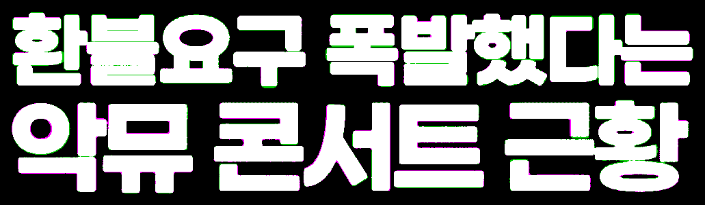
| 항목 | 값 |
|---|---|
| 그림 크기 | 1032 × 1834 |
| 비교 범위(제목 칸) | x 0~1031, y 169~471 |
| 둘 다 글자인 화소 | 145605 |
| 원본에만 있는 화소(자홍) | 2881 |
| 재현에만 있는 화소(초록) | 4569 |
자리·크기 (독립 검수)
| 줄 | 항목 | 원본 | 재현 | 차이 | 판정 |
|---|---|---|---|---|---|
| 「환불요구 폭발했다는」 | 글자 수 | 9.0 | 9.0 | 0.0 | 같음 |
| 「환불요구 폭발했다는」 | 줄 위 | 189.13 | 189.12 | -0.01 | 다름 |
| 「환불요구 폭발했다는」 | 줄 아래 | 295.39 | 295.97 | 0.58 | 다름 |
| 「환불요구 폭발했다는」 | 기준선(글자 아래 중앙값) | 292.97 | 292.9 | -0.07 | 다름 |
| 「환불요구 폭발했다는」 | 글자 높이(중앙값) | 101.1 | 100.88 | -0.22 | 다름 |
| 「환불요구 폭발했다는」 | 글자 너비(평균) | 103.63 | 102.63 | -1.0 | 다름 |
| 「환불요구 폭발했다는」 | 자간 평균(낱말 사이 뺌) | 3.69 | 4.86 | 1.17 | 다름 |
| 「환불요구 폭발했다는」 | 행간(다음 줄 위 - 이 줄 아래) | 22.87 | 21.27 | -1.6 | 다름 |
| 「환불요구 폭발했다는」 | 획 굵기 | 13.0 | 13.0 | 0.0 | 같음 |
| 「환불요구 폭발했다는」 | 기울기(가로밀림/높이) | -0.01 | 0.0 | 0.01 | 다름 |
| 「환불요구 폭발했다는」 | 가장자리 흐림 폭(px) | 3.59 | 3.7 | 0.11 | 다름 |
| 「환불요구 폭발했다는」 | 테두리 굵기 | None | None | None | 같음 |
| 「환불요구 폭발했다는」 | 자간 1 | 1.47 | 2.78 | 1.31 | 다름 |
| 「환불요구 폭발했다는」 | 자간 2 | 4.85 | 5.88 | 1.03 | 다름 |
| 「환불요구 폭발했다는」 | 자간 3 | 4.95 | 5.67 | 0.72 | 다름 |
| 「환불요구 폭발했다는」 | 자간 4 | 33.39 | 33.75 | 0.36 | 다름 |
| 「환불요구 폭발했다는」 | 자간 5 | 8.15 | 10.05 | 1.9 | 다름 |
| 「환불요구 폭발했다는」 | 자간 6 | 0.0 | 0.0 | 0.0 | 같음 |
| 「환불요구 폭발했다는」 | 자간 7 | 6.34 | 8.58 | 2.24 | 다름 |
| 「환불요구 폭발했다는」 | 자간 8 | 0.02 | 1.03 | 1.01 | 다름 |
| 「악뮤 콘서트 근황」 | 글자 수 | 7.0 | 7.0 | 0.0 | 같음 |
| 「악뮤 콘서트 근황」 | 줄 위 | 318.26 | 317.24 | -1.02 | 다름 |
| 「악뮤 콘서트 근황」 | 줄 아래 | 451.77 | 452.61 | 0.84 | 다름 |
| 「악뮤 콘서트 근황」 | 기준선(글자 아래 중앙값) | 449.52 | 449.46 | -0.06 | 다름 |
| 「악뮤 콘서트 근황」 | 글자 높이(중앙값) | 128.05 | 128.96 | 0.91 | 다름 |
| 「악뮤 콘서트 근황」 | 글자 너비(평균) | 129.38 | 129.73 | 0.35 | 다름 |
| 「악뮤 콘서트 근황」 | 자간 평균(낱말 사이 뺌) | 3.75 | 3.16 | -0.59 | 다름 |
| 「악뮤 콘서트 근황」 | 행간(다음 줄 위 - 이 줄 아래) | None | None | None | 같음 |
| 「악뮤 콘서트 근황」 | 획 굵기 | 19.0 | 19.0 | 0.0 | 같음 |
| 「악뮤 콘서트 근황」 | 기울기(가로밀림/높이) | 0.0 | 0.0 | 0.0 | 같음 |
| 「악뮤 콘서트 근황」 | 가장자리 흐림 폭(px) | 3.57 | 3.29 | -0.28 | 다름 |
| 「악뮤 콘서트 근황」 | 테두리 굵기 | None | None | None | 같음 |
| 「악뮤 콘서트 근황」 | 자간 1 | 0.0 | 0.0 | 0.0 | 같음 |
| 「악뮤 콘서트 근황」 | 자간 2 | 33.74 | 33.52 | -0.22 | 다름 |
| 「악뮤 콘서트 근황」 | 자간 3 | 3.6 | 2.11 | -1.49 | 다름 |
| 「악뮤 콘서트 근황」 | 자간 4 | 8.54 | 7.9 | -0.64 | 다름 |
| 「악뮤 콘서트 근황」 | 자간 5 | 32.84 | 32.74 | -0.1 | 다름 |
| 「악뮤 콘서트 근황」 | 자간 6 | 2.88 | 2.64 | -0.24 | 다름 |
| 줄 | 항목 | 원본 색 | 재현 색 | 차이 | 판정 |
|---|---|---|---|---|---|
| 「환불요구 폭발했다는」 | 테두리 색 | None RGB — | None RGB — | None | 같음 |
| 「환불요구 폭발했다는」 | 색 덩어리 나뉨 | [[0, 1, 2, 3, 4, 5, 6, 7, 8]] RGB — | [[0, 1, 2, 3, 4, 5, 6, 7, 8]] RGB — | None | 같음 |
| 「환불요구 폭발했다는」 | 채움색 1 | #E9E93B RGB 233,233,59 | #E8E838 RGB 232,232,56 | RGB차 -1,-1,-3 | 다름 |
| 「환불요구 폭발했다는」 | 위쪽 색 1 | #E9E93B RGB 233,233,59 | #E8E838 RGB 232,232,56 | RGB차 -1,-1,-3 | 다름 |
| 「환불요구 폭발했다는」 | 아래쪽 색 1 | #E9E93B RGB 233,233,59 | #E8E838 RGB 232,232,56 | RGB차 -1,-1,-3 | 다름 |
| 「악뮤 콘서트 근황」 | 테두리 색 | None RGB — | None RGB — | None | 같음 |
| 「악뮤 콘서트 근황」 | 색 덩어리 나뉨 | [[0, 1, 2, 3, 4, 5, 6]] RGB — | [[0, 1, 2, 3, 4, 5, 6]] RGB — | None | 같음 |
| 「악뮤 콘서트 근황」 | 채움색 1 | #D71516 RGB 215,21,22 | #D61415 RGB 214,20,21 | RGB차 -1,-1,-1 | 다름 |
| 「악뮤 콘서트 근황」 | 위쪽 색 1 | #D61516 RGB 214,21,22 | #D61415 RGB 214,20,21 | RGB차 +0,-1,-1 | 다름 |
| 「악뮤 콘서트 근황」 | 아래쪽 색 1 | #D71516 RGB 215,21,22 | #D61415 RGB 214,20,21 | RGB차 -1,-1,-1 | 다름 |
「환불요구 폭발했다는」 — 페이퍼로지 7 Bold
환
맞춤 겹침 0.8800
검수 겹침 0.9543
상자 어긋남 +0.1, -0.0, -0.7, -0.1px
검수 겹침 0.9543
상자 어긋남 +0.1, -0.0, -0.7, -0.1px
불
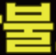
맞춤 겹침 0.8500
검수 겹침 0.9643
상자 어긋남 +0.6, -0.0, -0.2, -0.3px
검수 겹침 0.9643
상자 어긋남 +0.6, -0.0, -0.2, -0.3px
요
맞춤 겹침 0.9000
검수 겹침 0.9523
상자 어긋남 +0.8, +1.0, -0.5, -0.9px
검수 겹침 0.9523
상자 어긋남 +0.8, +1.0, -0.5, -0.9px
구
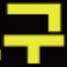
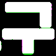
맞춤 겹침 0.8250
검수 겹침 0.9415
상자 어긋남 +0.2, +0.3, -0.0, +0.6px
검수 겹침 0.9415
상자 어긋남 +0.2, +0.3, -0.0, +0.6px
폭
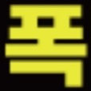
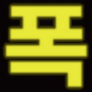
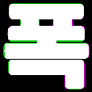
맞춤 겹침 0.8800
검수 겹침 0.9643
상자 어긋남 +0.3, +1.0, -0.9, -1.0px
검수 겹침 0.9643
상자 어긋남 +0.3, +1.0, -0.9, -1.0px
발
맞춤 겹침 0.8720
검수 겹침 0.9671
상자 어긋남 +1.0, +0.3, +0.0, +0.0px
검수 겹침 0.9671
상자 어긋남 +1.0, +0.3, +0.0, +0.0px
했
맞춤 겹침 0.8510
검수 겹침 0.9676
상자 어긋남 +0.0, -0.1, -0.9, -0.8px
검수 겹침 0.9676
상자 어긋남 +0.0, -0.1, -0.9, -0.8px
다
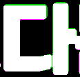
맞춤 겹침 0.9090
검수 겹침 0.9371
상자 어긋남 +1.3, -0.0, +0.0, -0.1px
검수 겹침 0.9371
상자 어긋남 +1.3, -0.0, +0.0, -0.1px
는
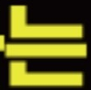
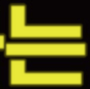
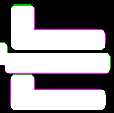
맞춤 겹침 0.9020
검수 겹침 0.9628
상자 어긋남 +1.0, -0.2, -0.3, -0.1px
검수 겹침 0.9628
상자 어긋남 +1.0, -0.2, -0.3, -0.1px
「악뮤 콘서트 근황」 — 페이퍼로지 7 Bold
악
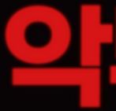
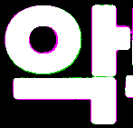
맞춤 겹침 0.9130
검수 겹침 0.9609
상자 어긋남 +0.3, -0.1, +0.0, +0.2px
검수 겹침 0.9609
상자 어긋남 +0.3, -0.1, +0.0, +0.2px
뮤
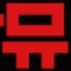
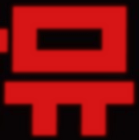
맞춤 겹침 0.8930
검수 겹침 0.9647
상자 어긋남 +0.0, -0.0, +0.1, +0.8px
검수 겹침 0.9647
상자 어긋남 +0.0, -0.0, +0.1, +0.8px
콘
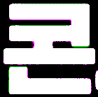
맞춤 겹침 0.8940
검수 겹침 0.9742
상자 어긋남 -0.1, -0.0, +0.7, +0.6px
검수 겹침 0.9742
상자 어긋남 -0.1, -0.0, +0.7, +0.6px
서
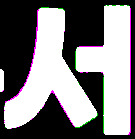
맞춤 겹침 0.8960
검수 겹침 0.9684
상자 어긋남 -0.8, -1.0, -0.3, +0.7px
검수 겹침 0.9684
상자 어긋남 -0.8, -1.0, -0.3, +0.7px
트
맞춤 겹침 0.8850
검수 겹침 0.9682
상자 어긋남 -1.0, -0.1, -0.0, +0.4px
검수 겹침 0.9682
상자 어긋남 -1.0, -0.1, -0.0, +0.4px
근
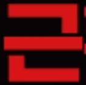
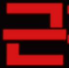
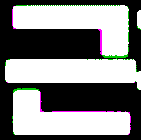
맞춤 겹침 0.8790
검수 겹침 0.9737
상자 어긋남 -0.1, -0.1, +0.1, -0.7px
검수 겹침 0.9737
상자 어긋남 -0.1, -0.1, +0.1, -0.7px
황
맞춤 겹침 0.8730
검수 겹침 0.9504
상자 어긋남 -0.1, -1.0, +0.1, -0.0px
검수 겹침 0.9504
상자 어긋남 -0.1, -1.0, +0.1, -0.0px
| 줄 | 항목 | 원본 | 재현 | 차이 | 판정 |
|---|---|---|---|---|---|
| 「환불요구 폭발했다는」 | 글자 수 | 9.0 | 9.0 | 0.0 | 같음 |
| 「환불요구 폭발했다는」 | 줄 위 | 189.13 | 189.12 | -0.01 | 다름 |
| 「환불요구 폭발했다는」 | 줄 아래 | 295.39 | 295.97 | 0.58 | 다름 |
| 「환불요구 폭발했다는」 | 기준선(글자 아래 중앙값) | 292.97 | 292.9 | -0.07 | 다름 |
| 「환불요구 폭발했다는」 | 글자 높이(중앙값) | 101.1 | 100.88 | -0.22 | 다름 |
| 「환불요구 폭발했다는」 | 글자 너비(평균) | 103.63 | 102.63 | -1.0 | 다름 |
| 「환불요구 폭발했다는」 | 자간 평균(낱말 사이 뺌) | 3.69 | 4.86 | 1.17 | 다름 |
| 「환불요구 폭발했다는」 | 행간(다음 줄 위 - 이 줄 아래) | 22.87 | 21.27 | -1.6 | 다름 |
| 「환불요구 폭발했다는」 | 획 굵기 | 13.0 | 13.0 | 0.0 | 같음 |
| 「환불요구 폭발했다는」 | 기울기(가로밀림/높이) | -0.01 | 0.0 | 0.01 | 다름 |
| 「환불요구 폭발했다는」 | 가장자리 흐림 폭(px) | 3.59 | 3.7 | 0.11 | 다름 |
| 「환불요구 폭발했다는」 | 테두리 색 | None | None | None | 같음 |
| 「환불요구 폭발했다는」 | 테두리 굵기 | None | None | None | 같음 |
| 「환불요구 폭발했다는」 | 자간 1 | 1.47 | 2.78 | 1.31 | 다름 |
| 「환불요구 폭발했다는」 | 자간 2 | 4.85 | 5.88 | 1.03 | 다름 |
| 「환불요구 폭발했다는」 | 자간 3 | 4.95 | 5.67 | 0.72 | 다름 |
| 「환불요구 폭발했다는」 | 자간 4 | 33.39 | 33.75 | 0.36 | 다름 |
| 「환불요구 폭발했다는」 | 자간 5 | 8.15 | 10.05 | 1.9 | 다름 |
| 「환불요구 폭발했다는」 | 자간 6 | 0.0 | 0.0 | 0.0 | 같음 |
| 「환불요구 폭발했다는」 | 자간 7 | 6.34 | 8.58 | 2.24 | 다름 |
| 「환불요구 폭발했다는」 | 자간 8 | 0.02 | 1.03 | 1.01 | 다름 |
| 「환불요구 폭발했다는」 | 색 덩어리 나뉨 | [[0, 1, 2, 3, 4, 5, 6, 7, 8]] | [[0, 1, 2, 3, 4, 5, 6, 7, 8]] | None | 같음 |
| 「환불요구 폭발했다는」 | 채움색 1 | #E9E93B | #E8E838 | RGB차 -1,-1,-3 | 다름 |
| 「환불요구 폭발했다는」 | 위쪽 색 1 | #E9E93B | #E8E838 | RGB차 -1,-1,-3 | 다름 |
| 「환불요구 폭발했다는」 | 아래쪽 색 1 | #E9E93B | #E8E838 | RGB차 -1,-1,-3 | 다름 |
| 「악뮤 콘서트 근황」 | 글자 수 | 7.0 | 7.0 | 0.0 | 같음 |
| 「악뮤 콘서트 근황」 | 줄 위 | 318.26 | 317.24 | -1.02 | 다름 |
| 「악뮤 콘서트 근황」 | 줄 아래 | 451.77 | 452.61 | 0.84 | 다름 |
| 「악뮤 콘서트 근황」 | 기준선(글자 아래 중앙값) | 449.52 | 449.46 | -0.06 | 다름 |
| 「악뮤 콘서트 근황」 | 글자 높이(중앙값) | 128.05 | 128.96 | 0.91 | 다름 |
| 「악뮤 콘서트 근황」 | 글자 너비(평균) | 129.38 | 129.73 | 0.35 | 다름 |
| 「악뮤 콘서트 근황」 | 자간 평균(낱말 사이 뺌) | 3.75 | 3.16 | -0.59 | 다름 |
| 「악뮤 콘서트 근황」 | 행간(다음 줄 위 - 이 줄 아래) | None | None | None | 같음 |
| 「악뮤 콘서트 근황」 | 획 굵기 | 19.0 | 19.0 | 0.0 | 같음 |
| 「악뮤 콘서트 근황」 | 기울기(가로밀림/높이) | 0.0 | 0.0 | 0.0 | 같음 |
| 「악뮤 콘서트 근황」 | 가장자리 흐림 폭(px) | 3.57 | 3.29 | -0.28 | 다름 |
| 「악뮤 콘서트 근황」 | 테두리 색 | None | None | None | 같음 |
| 「악뮤 콘서트 근황」 | 테두리 굵기 | None | None | None | 같음 |
| 「악뮤 콘서트 근황」 | 자간 1 | 0.0 | 0.0 | 0.0 | 같음 |
| 「악뮤 콘서트 근황」 | 자간 2 | 33.74 | 33.52 | -0.22 | 다름 |
| 「악뮤 콘서트 근황」 | 자간 3 | 3.6 | 2.11 | -1.49 | 다름 |
| 「악뮤 콘서트 근황」 | 자간 4 | 8.54 | 7.9 | -0.64 | 다름 |
| 「악뮤 콘서트 근황」 | 자간 5 | 32.84 | 32.74 | -0.1 | 다름 |
| 「악뮤 콘서트 근황」 | 자간 6 | 2.88 | 2.64 | -0.24 | 다름 |
| 「악뮤 콘서트 근황」 | 색 덩어리 나뉨 | [[0, 1, 2, 3, 4, 5, 6]] | [[0, 1, 2, 3, 4, 5, 6]] | None | 같음 |
| 「악뮤 콘서트 근황」 | 채움색 1 | #D71516 | #D61415 | RGB차 -1,-1,-1 | 다름 |
| 「악뮤 콘서트 근황」 | 위쪽 색 1 | #D61516 | #D61415 | RGB차 +0,-1,-1 | 다름 |
| 「악뮤 콘서트 근황」 | 아래쪽 색 1 | #D71516 | #D61415 | RGB차 -1,-1,-1 | 다름 |